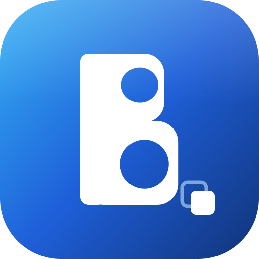

.json / .txt. O
conteúdo será exibido na caixa para revisão antes da importação.
O Sprinklr é a edição local do Blû voltada para desktop e telas grandes. Ele organiza textos reutilizáveis em botões e seções, oferece edição e portabilidade dos dados e funciona sem recursos de compartilhamento ou serviços online.
| / | Foca a busca |
| "texto" | Busca diretamente no conteúdo dos botões |
| Alt + N | Nova Seção |
| Alt + G | Ativar/desativar modo edição |
| Shift Shift | Ativar/desativar Modo Organização (dois toques rápidos) |
| Alt + C | Ativar/desativar criptografia do export |
| Ctrl + S | Exportar |
| Ctrl + Shift + D | Alternar tema |
| Ctrl + E | Expandir/minimizar categorias |
| Ctrl + Z | Desfazer |
| Ctrl + Y | Refazer |
| Esc | Fechar modais |
| Ctrl + Enter | Salvar (dentro de um modal aberto) |
| ? | Este painel de atalhos |
| Botão direito | Abre ações do botão ou da seção |